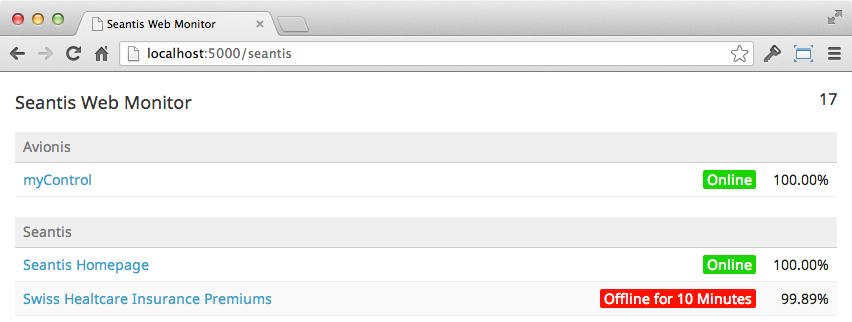

Blog
Git for Reproducibility in Scientific Research
«Reproducibility is the hallmark of good science.» http://www.scfbm.org/content/8/1/7/
Git (Version Control System)
Git is a decentralized and distributed version control system (VCS). It's widely used in the software industry to maintain code repositories.
http://git-scm.com
LaTeX (Typesetting)
LaTeX is a high-quality typesetting system. LaTeX is the de facto standard for the publication of scientific documents.
http://www.latex-project.org
latex-git-log can be used to typeset the complete Git version history as table written in LaTeX. The typeset output (PDF document) includes the Git revisions (short SHA-1 hash). http://www.ctan.org/tex-archive/support/latex-git-log
SQL Research Database (Snapshots)
All data of the registry is mirrored to a separate SQL database (research database). During the transfer process data transformations take place to bring the data into a tabular structure and to anonymize personal subject data. To ensure full reproducibility of SQL queries we create periodic snapshots of the research database. A snapshot is a complete immutable SQL database with a consistent naming convention (YYYY-MM-DD: e.g. 2013-12-29)
Sweave (R in LaTeX)
Sweave combines R codes and LaTeX documents for reproducing results. It makes it easy to embed R code into LaTeX.
Project Templates
For each new research project a template based Git repository is created. The template contains a common folder layout, scripts and LaTeX templates. The deployment of new repositories is managed with Puppet.
https://puppetlabs.com
Secure Shell Access (SSH)
Access control to the Git research repositories and to the SQL server with the research snapshot database is managed with SSH public/private keys.
GitWeb (Git Server)
Git repositories on a Git server have a URL and could be opened to the public by submitting links to the Git repository alongside manuscripts sharing them with reviewers. To lower technical barrier (installing and maintaining a Git server) web-based hosting service for Git repositories such as GitHub or Bitbucket could be used for the collaboration as well.
http://git-scm.com/book/ch4-6.html
About SCQM
The SCQM Foundation runs a scientific platform for prospective long-term studies on inflammatory rheumatic diseases
http://www.scqm.ch

BAU statt DAU
Die Idee hinter dem DAU ist, dass ein Programm auch ohne Hintergrundwissen der zukünftigen Anwender benutzbar und von ihnen intuitiv anwendbar ist [http://de.wikipedia.org/wiki/D%C3%BCmmster_anzunehmender_User]. Ich finde das Konzept aus drei Gründen nicht überzeugend:
- Der DAU ist ein theoretisches Konstrukt, das in der Realität gar nicht vorkommt.
- Weil man den DAU in der freien Wildbahn nicht beobachten kann, hat jeder seine eigene Vorstellung vom DAU. Argumentationen, die auf den DAU Bezug nehmen, sind daher immer äusserst subjektiv.
- Software für den DAU zu designen ist eine Frechheit gegenüber allen anderen Benutzern. Für sie wird es nämlich mühsam und sie fühlen sich nicht ernst genommen. Alle Benutzer werden für dumm verkauft.
Der «betrunken anzunehmende User» BAU hat alle diese Nachteile nicht
- Der BAU ist real und die entsprechende Situation mit genügend Alkohol jederzeit reproduzierbar.
- Der BAU ist beobachtbar. Er ist ein realer Benutzer mit gewissen Einschränkungen.
- Wenn ich Software für den BAU baue, dann muss ich mir stets bewusst sein, dass der BAU zwar betrunken aber nicht dumm ist!
Warum aber überhaupt an den BAU denken und nicht einfach nur an den nüchtern Benutzer? Vielleicht weil alle User durch eine Vielzahl Faktoren abgelenkt sind und durch Multitasking ihre Sinne vernebelt werden.
Die Idee ist von Will Dayble (@willdayble): «The User is Drunk»
Flask vs. Django vs. Pyramid vs. Plone
Wir entwickeln Web Applikationen mit unterschiedlichen Python Frameworks. Unterschiedliche Anforderungen verlangen nach unterschiedlichen Werkzeugen.
Einen direkten Vergleich zwischen den Python Web Frameworks Flask, Django, Pyramid und Plone gibt es hier: http://blog.stacktrace.ch/post/49178654214
WebCronMon - Web Monitor
At seantis we use Webcron.org to monitor our sites. For our customers, as well as for our office monitor screen, we wanted a simple auto-refreshing page that shows the status of our sites at a glance. We therefore wrote this small Flask application looking like this:

The monitor only shows the bare minimum of information to keep things simple:
- list monitors by group
- link the monitors to the actual website
- show the current state (online / offline since)
- show the uptime of the last 30 days
The site will update the list every 60 seconds by default, unless configured otherwise or unless the timer on the upper right is toggled with a mouse- click.
GitHub project: https://github.com/seantis/webcronmon
Über das Problem sprechen statt über die Lösung!
Die perzipierte Lösung ohne ausführlichere Beschreibung des zugrunde liegenden Problems (im Sinne von zu lösender Aufgabe) kann für das Projekt zum Risiko werden. Das Denken in vorgespurten Lösungskategorien verengt vorzeitig den Möglichkeitsraum für die zu entwickelnde Lösung. Gut möglich, dass es passendere und bessere Lösungen gibt.
Das Nachdenken über das Problem an sich darf nicht übersprungen werden.
1) Beschreibung des Problems
Ein paar wenige Sätze zur Beschreibung des Problems. Sätze und nicht Bullet Points! Also auch kein Power Point bitte.
2) Ursachen des Problems
Verschiedene Erklärungsversuche (Arbeitshypothesen) sollen aufgestellt werden.
3) Quantifizierung des Problems
Wie gross ist das Problem relativ gesehen: haben 5 von 1'000 Benutzern ein Problem oder sind es 500 von 1'000? Die Relationen abschätzen zu können hilft.
4) Abgrenzungen (Scope)
Es soll beschrieben werden, was nicht Teil des Problems ist. Es mag paradox erscheinen, aber das explizite Benennen von Elementen, die nicht Teil des Problems sind, macht durchaus Sinn.
5) Begrifflichkeiten klären
Für Personen mit unterschiedlichem Hintergrund darf nicht davon ausgegangen werden, dass sie unter einem verwendeten Begriff das Gleiche verstehen.
6) Quick Fix
Gibt es eine einfache Möglichkeit, das Problem rasch aus der Welt zu schaffen? Können bestehende Prozesse so angepasst werden, dass sich das Problem mit kleinem Aufwand - so genannt "administrativ" - bewältigen lässt.
Die Schritte 2)-6) kann man sich auch sparen. Sie sollen lediglich illustrieren, dass die gründliche Analyse eines Problems mehr bringt, als die voreilige Zuflucht zu eine bekannte Lösung.
Probleme zu finden ist schwierig genug
Warum haben viele Leute die Tendenz voreilig über die Lösung sprechen zu wollen, statt zuerst gründlich über das zugrundeliegende Problem nachzudenken?
Es wird zu wenig anerkannt, dass allein schon das Finden und Beschreiben von Problemen wertvoll und keinesfalls trivial ist!
[..] I’ve learned one of the biggest mistakes “nontechnical” people make when communicating to great hackers about product is that we try and tell them the solutions before we ever tell them the problem. It’s like we don’t trust them to be able to think through and reach their own solution. When in reality their solution is usually 10-100x better than ours because they are the ones building it!!
I started thinking about this and realized maybe its because nontechnical people don’t realize the value they’ve created just by finding the problem. Truly, just being able to find and articulate the problem is really valuable when building a product.
http://katgleason.tumblr.com/post/47257463324/talk-about-the-problem-not-the- solution